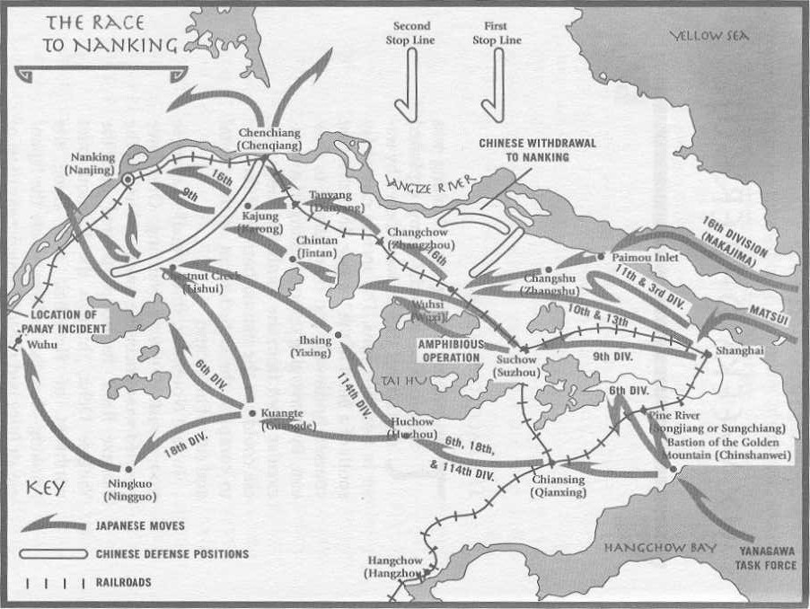

2
Six Weeks of Terror
The Race to Nanking
The Japanese strategy for Nanking was simple. The imperial army exploited the fact that the city was blocked by water in two directions. The ancient capital lay south of a bend in the Yangtze River that first coursed northward and then turned to flow east. By converging upon Nanking in a semicircular front from the southeast, the Japanese could use the natural barrier of the river to complete the encirclement of the capital and cut off all escape.
In late November, three parallel Japanese troops rushed toward Nanking. One force traveled west under the southern bank of the Yangtze River. Its troops poured into the Yangtze Delta, through the Paimou Inlet northwest of Shanghai, and along the Nanking-Shanghai railway, where the Japanese air force had already blasted away most of the bridges. These troops were led by Naka-jima Kesago, who had worked as a member of Japanese army intelligence in France and later as chief of the Japanese secret police for Emperor Hirohito. Not much has been written about Nakajima, but what has been written is overwhelmingly negative. David Bergamini, author of Japan's Imperial Conspiracy, called him a "small Himmler of a man, a specialist in thought control, intimidation and torture" and quoted others describing Nakajima as a sadist who packed for his journey to Nanking special oil for burning bodies. Even his biographer, Kimura Kuninori, mentioned that Nakajima had been described as "a beast" and "a violent man."
Another force readied itself for a bold amphibious assault across Tai Hu, a lake situated halfway between Shanghai and Nanking. This force moved west from Shanghai in a route south of Nakajima's troops. Directing the movement was General Matsui Iwane, a frail, slight, tubercular man with a tiny mustache. Unlike Nakajima, Matsui was a devout Buddhist from a scholarly family. He was also the commander-in-chief of the Japanese imperial army for the entire Shanghai-Nanking region.
A third force traveled further south of Matsui's men and swerved northwest toward Nanking. Heading this force was Lieutenant General Yanagawa Heisuke, a bald, short man with literary interests. Perhaps to a greater degree than most other Japanese involved in the Rape of Nanking, his life during the invasion is veiled in mystery. According to his biographer, Sugawara Yutaka, the fascist clique that took control of the Japanese military had expelled Yanagawa from their ranks because he attempted to stop their 1932 coup. After his marginalization and demotion to the reserves, Yanagawa served as a commanding officer in China and performed "great military achievements ... including the surrounding of Nanking," but the military withheld his name and photograph from publication at the time. Thus Yanagawa was known to many in Japan as "the masked shogun."
Little was spared on the path to Nanking. Japanese veterans remember raiding tiny farm communities, where they clubbed or bayoneted everyone in sight. But small villages were not the only casualties; entire cities were razed to the ground. Consider the example of Suchow (now called Suzhou), a city on the east bank of Tai Hu Lake. One of the oldest cities of China, it was prized for its delicate silk embroidery, palaces, and temples. Its canals and ancient bridges had earned the city its Western nickname as "the Venice of China." On November 19, on a morning of pouring rain, a Japanese advance guard marched through the gates of Suchow, wearing hoods that prevented Chinese sentries from recognizing them. Once inside, the Japanese murdered and plundered the city for days, burning down ancient landmarks and abducting thousands of Chinese women for sexual slavery. The invasion, according to the China Weekly Review, caused the population of the city to drop from 350,000 to less than 500.
A British correspondent had the opportunity to record what was left of Pine River (Sungchiang, a suburban city of Shanghai), nine weeks after the Japanese had passed through it. "There is hardly a building standing which has not been gutted by fire," he wrote. "Smoldering ruins and deserted streets present an eerie spectacle, the only living creatures being dogs unnaturally fattened by feasting on corpses. In the whole of Sungchiang, which should contain a densely packed population of approximately 100,000, I saw only five Chinese, who were old men, hiding in a French mission compound in tears."
Asaka Takes Command
But the worst was still to come.
On December 7, as the Japanese troops zeroed in on Nanking, General Matsui grew feverishly ill in his field headquarters at Suchow—another flare-up of his chronic tuberculosis. The illness struck Matsui right when power shifted from his command to that of a member of the imperial family. Only five days earlier Emperor Hirohito had promoted Matsui out of the action while dispatching his own uncle, Prince Asaka Yasuhiko, to the front to replace him. Under the new order, Matsui would be in charge of the entire central China theater, while Asaka, a lieutenant general with a thirty-year tenure in the military, would take responsibility as the new commander-in-chief of the army around Nanking. As a member of the royal family, Asaka possessed power that would override all other authority on the Nanking front. He was also closer to Lieutenant General Nakajima and General Yanagawa than to Matsui because he had spent three years in Paris with them as a military intelligence officer.
Little is known as to why Hirohito chose at this critical moment to give Asaka this position, though Bergamini believes it was done to test Asaka, who had sided with the emperor's brother Chichibu against Hirohito on a political issue during the February 1936 army mutiny. On the palace rolls, Hirohito had singled out Asaka as the one member of the royal family who possessed an attitude that was "not good" and apparently gave his uncle the appointment at Nanking as an opportunity to redeem himself.
At the time it seemed like a trivial change, but later, for the lives of hundreds of thousands of Chinese, it would prove to be a critical one.
It is hard to describe what really happened behind the scenes in the Japanese army because many of the details were given by Matsui and his colleagues years later at their war crimes trial, or by sources who may be unreliable, and they are therefore cited with caution. But if their testimony can be believed, this is what we learn. Wary of the imperial newcomer and the potential for abuse of power, Matsui issued a set of moral commandments for the invasion of Nanking. He ordered his armies to regroup a few kilometers outside the city walls, to enter the Chinese capital with only a few well-disciplined battalions, and to complete the occupation so that the army would "sparkle before the eyes of the Chinese and make them place confidence in Japan." He also called a meeting of staff officers before his sickbed and proclaimed:
The entry of the Imperial Army into a foreign capital is a great event in our history ... attracting the attention of the world. Therefore let no unit enter the city in a disorderly fashion . ... Let them know beforehand the matters to be remembered and the position of foreign rights and interests in the walled city. Let them be absolutely free from plunder. Dispose sentries as needed. Plundering and causing fires, even carelessly, shall be punished severely. Together with the troops let many military police and auxiliary military police enter the walled city and thereby prevent unlawful conduct.
But events were brewing elsewhere over which Matsui had no control. On December 5, the story goes, Prince Asaka left Tokyo by plane and arrived on the front three days later. In an abandoned country villa near field headquarters some ten miles southeast of Nanking, Prince Asaka met with General Nakajima, his colleague from his Paris days, who was now recovering from a flesh wound in his left buttock. Nakajima told Asaka that the Japanese were about to surround three hundred thousand Chinese troops in the vicinity of Nanking and that preliminary negotiations revealed that they were ready to surrender.
After Asaka heard this report, it was said that his headquarters sent out a set of orders, under his personal seal, marked "Secret, to be destroyed." We now know that the clear message of these orders was: "KILL ALL CAPTIVES." What is not clear is whether Asaka himself issued the orders.*
* Cho Isamu, Asaka's staff officer for intelligence, later confessed to friends that on his own initiative he had forged the order. Another Japanese officer, Tanaka Ryukichi, said that in April 1938, Cho, then the head of the 74th wing of the Japanese army, told him an interesting tale. Cho told him that when his troops landed at Hangchow (or Hangzhou) Bay and pushed inland, nearly 300,000 Chinese troops were cut off from retreat, so they threw away their weapons and surrendered to the Japanese. "To arrange for so many prisoners, to feed them, was a huge problem," Cho reportedly said.
As the story goes, Cho seized upon a quick-fix solution to eliminate the food problem: "I immediately issued orders to all troops: 'We must entirely massacre these prisoners!' Using the name of the military commander, I sent these orders by telegram. The wording of the order was to annihilate."
We will never know if this story is true, but it must be noted that even if Cho had indeed forged the kill order on his own, this does not absolve Prince Asaka of responsibility for the massacre. Asaka could have issued an order to cancel the massacre once it started and court-martialed his intelligence officer.
By the time Japanese troops entered Nanking, an order to eliminate all Chinese captives had been not only committed to paper but distributed to lower-echelon officers. On December 13, 1937, the Japanese 66th Battalion received the following command:
BATTALION BATTLE REPORTER, AT 2:00 RECEIVED ORDER FROM THE REGIMENT COMMANDER: TO COMPLY WITH ORDERS FROM BRIGADE COMMANDING HEADQUARTERS, ALL PRISONERS OF WAR ARE TO BE EXECUTED. METHOD OF EXECUTION: DIVIDE THE PRISONERS INTO GROUPS OF A DOZEN. SHOOT TO KILL SEPARATELY.
3:30 P.M. A MEETING IS CALLED TO GATHER COMPANY COMMANDERS TO EXCHANGE OPINIONS ON HOW TO DISPOSE OF POWS. FROM THE DISCUSSION IT IS DECIDED THAT THE PRISONERS ARE TO BE DIVIDED EVENLY AMONG EACH COMPANY (1ST, 2ND AND 4TH COMPANY) AND TO BE BROUGHT OUT FROM THEIR IMPRISONMENT IN GROUPS OF 50 TO BE EXECUTED. 1ST COMPANY IS TO TAKE ACTION IN THE GRAIN FIELD SOUTH OF THE GARRISON; 2ND COMPANY TAKES ACTION IN THE DEPRESSION SOUTHWEST OF THE GARRISON; AND 4TH COMPANY TAKES ACTION IN THE GRAIN FIELD SOUTHEAST OF THE GARRISON.
THE VICINITY OF THE IMPRISONMENT MUST BE HEAVILY GUARDED. OUR INTENTIONS ARE ABSOLUTELY NOT TO BE DETECTED BY THE PRISONERS.
EVERY COMPANY IS TO COMPLETE PREPARATION BEFORE 5:00. EXECUTIONS ARE TO START BY 5:00 AND ACTION IS TO BE FINISHED BY 7:30.
There was a ruthless logic to the order. The captives could not be fed, so they had to be destroyed. Killing them would not only eliminate the food problem but diminish the possibility of retaliation. Moreover, dead enemies could not form up into guerrilla forces.
But executing the order was another matter. When the Japanese troops smashed through the walls in the early predawn hours of December 13, they entered a city in which they were vastly outnumbered. Historians later estimated that more than half a million civilians and ninety thousand Chinese troops were trapped in Nanking, compared to the fifty thousand Japanese soldiers who assaulted the city. General Nakajima knew that killing tens of thousands of Chinese captives was a formidable task: "To deal with crowds of a thousand, five thousand, or ten thousand, it is tremendously difficult even just to disarm them . ... It would be disastrous if they were to make any trouble."
Killing the Prisoners of War
Because of their limited manpower, the Japanese relied heavily on deception. The strategy for mass butchery involved several steps: promising the Chinese fair treatment in return for an end to resistance, coaxing them into surrendering themselves to their Japanese conquerors, dividing them into groups of one to two hundred men, and then luring them to different areas near Nanking to be killed. Nakajima hoped that faced with the impossibility of further resistance, most of the captives would lose heart and comply with whatever directions the Japanese gave them.
All this was easier to achieve than the Japanese had anticipated. Resistance was sporadic; indeed, it was practically nonexistent. Having thrown away their arms when attempting to flee the city as the Japanese closed in, many Chinese soldiers simply turned themselves in, hoping for better treatment. Once the men surrendered and permitted their hands to be bound, the rest was easy.
Perhaps nowhere is the passivity of the Chinese soldiers better illustrated than in the diary of the former Japanese soldier Azuma Shiro, who described the surrender of thousands of Chinese troops shortly after the fall of Nanking. His own troops were assigning sentry and billet in a city square when they suddenly received an order to round up about 20,000 prisoners of war.
Azuma and his countrymen walked some nine or ten miles in search of the prisoners. Night fell, and the Japanese finally heard a rumbling, frog-like noise. They also saw numerous cigarette lights blinking in the darkness. "It was a magnificent view," Azuma wrote. "Seven thousand prisoners all in one place, gathering around the two white flags attached to a dead branch, which flew in the night sky." The prisoners were a ragged assortment of men wearing blue cotton military uniforms, blue cotton overcoats, and caps. Some covered their heads with blankets, some carried mat-rush sacks, and some carried futons on their backs. The Japanese lined the prisoners up into four columns, with the white flag at the head. This group of thousands of Chinese soldiers had waited patiently for the Japanese to fetch them and direct them to the next step in the surrender process.
The reluctance of the Chinese army to fight back stunned Azuma. To a man who came from a military culture in which pilots were given swords instead of parachutes, and in which suicide was infinitely preferable to capture, it was incomprehensible that the Chinese would not fight an enemy to the death. His contempt for the Chinese deepened when he discovered that the prisoners' numbers exceeded those of the cap-tors.
"It was funny yet pitiable when I imagined how they gathered whatever white cloth they could find, attached it to a dead twig, and marched forward just to surrender," Azuma wrote.
I thought, how could they become prisoners, with the kind of force they had—more than two battalions—and without even trying to show any resistance. There must have been a considerable number of officers for this many troops, but not a single one remained, all of them having slipped away and escaped, I thought. Although we had two companies, and those seven thousand prisoners had already been disarmed, our troops could have been annihilated had they decided to rise up and revolt.
A welter of emotions filled Azuma. He felt sorry for the Chinese soldiers, thirsty and frightened men who constantly asked for water and reassurance that they would not be killed. But at the same time their cowardice disgusted him. Azuma suddenly felt ashamed for ever having been secretly afraid of the Chinese in previous battles, and his automatic impulse was to dehumanize the prisoners by comparing them to insects and animals.
They all walked in droves, like ants crawling on the ground. They looked like a bunch of homeless people, with ignorant expressions on their faces.
A herd of ignorant sheep, with no rule or order, marched on in the darkness, whispering to each other.
They hardly looked like the enemy who only yesterday was shooting at and troubling us. It was impossible to believe that they were the enemy soldiers.
It felt quite foolish to think we had been fighting to the death against these ignorant slaves. And some of them were even twelve- or thirteen-year-old boys.
The Japanese led the prisoners to a nearby village. Azuma recalled that when some of the Chinese were herded into a large house, they hesitated to enter, looking upon the place as if it were "a slaughter house." But finally they gave in and filed through the gate. Some of the prisoners struggled with the Japanese only when the latter tried to take away their blankets and bedding. The next morning Azuma and his comrades received an order to patrol another area; they later learned that while they were on patrol the Chinese prisoners had been assigned to companies in groups of two to three hundred, then killed.
Probably the single largest mass execution of prisoners of war during the Rape of Nanking took place near Mufu Mountain. The mountain lay directly north of Nanking, between the city and the south bank of the Yangtze River; an estimated fifty-seven thousand civilians and former soldiers were executed.
The killing proceeded in stealth and in stages. On December 16, the Asahi Shimbun newspaper correspondent Yokoto reported that the Japanese had captured 14,777 soldiers near the artillery forts of Wulong Mountain and Mufu Mountain and that the sheer number of the prisoners posed problems. "The [Japanese] army encountered great difficulties since this was the first time that such a huge number of POWs were captured," Yokoto wrote. "There were not enough men to handle them."
According to Kurihara Riichi, a former Japanese army corporal who kept diaries and notes of the event, the Japanese disarmed thousands of prisoners, stripped them of everything but their clothes and blankets, and escorted them to a row of straw-roofed temporary buildings. When the Japanese military received orders on December 17 to kill the prisoners, they proceeded with extra caution. That morning the Japanese announced that they were going to transport the Chinese prisoners to Baguazhou, a small island in the middle of the Yangtze River. They explained to the captives that they needed to take special precautions for the move and bound the captives' hands behind their backs—a task that took all morning and most of the afternoon.
Sometime between 4:00 and 6:00 p.m., the Japanese divided the prisoners into four columns and marched them to the west, skirting the hills and stopping at the riverbank. "After three or four hours waiting and not knowing what was going on, the prisoners could not see any preparations for crossing the river," the corporal wrote. "It was then growing dark. They did not know ... that Japanese soldiers already encircled them in a crescent formation along the river and they were in the sights of many machine guns."
By the time the executions began, it was too late for the Chinese to escape. "Suddenly all lands of guns fired at once," Kurihara Riichi wrote. "The sounds of these firearms mingled with desperate yelling and screams." For an hour the Chinese struggled and thrashed about desperately, until there were few sounds still coming from the group. From evening until dawn the Japanese bayoneted the bodies, one by one.
Body disposal posed a mammoth problem for the Japanese. Only a fraction of the total number of men who perished in and around Nanking were slaughtered at Mufu Mountain, yet the cleanup there took days. Burial was one method of disposal, but General Nakajima complained in his diary that it was hard to locate ditches large enough to bury heaps of seven to eight thousand corpses. Cremation was another, but the Japanese often lacked sufficient fuel to do a proper job. After the Mufu Mountain massacre, for instance, the Japanese poured large drums of gasoline on the bodies to burn them, but the drums ran out before fires could reduce the remains to ashes. "The result was a mountain of charred corpses," a Japanese corporal wrote.
Many bodies were simply dumped into the Yangtze River.
The Murder of Civilians
After the soldiers surrendered en masse, there was virtually no one left to protect the citizens of the city. Knowing this, the Japanese poured into Nanking on December 13, 1937, occupying government buildings, banks, and warehouses, shooting people randomly in the streets, many of them in the back as they ran away. Using machine guns, revolvers, and rifles, the Japanese fired at the crowds of wounded soldiers, elderly women, and children who gathered in the North Chungshan and Central roads and nearby alleys. They also killed Chinese civilians in every section of the city: tiny lanes, major boulevards, mud dugouts, government buildings, city squares. As victims toppled to the ground, moaning and screaming, the streets, alleys, and ditches of the fallen capital ran rivers of blood, much of it coming from people barely alive, with no strength left to run away.
The Japanese systematically killed the city dwellers as they conducted house-to-house searches for Chinese soldiers in Nanking. But they also massacred the Chinese in the nearby suburbs and countryside. Corpses piled up outside the city walls, along the river (which had literally turned red with blood), by ponds and lakes, and on hills and mountains. In villages near Nanking, the Japanese shot down any young man who passed, under the presumption that he was likely to be a former Chinese soldier. But they also murdered people who could not possibly be Chinese soldiers—elderly men and women, for instance—if they hesitated or even if they failed to understand orders, delivered in the Japanese language, to move this way or that.
During the last ten days of December, Japanese motorcycle brigades patrolled NanJung while Japanese soldiers shouldering loaded rifles guarded the entrances to all the streets, avenues, and alleys. Troops went from door to door, demanding that the doors be opened to welcome the victorious armies. The moment the shopkeepers complied, the Japanese opened fire on them. The imperial army massacred thousands of people in this manner and then systematically looted the stores and burned whatever they had no use for.
The Japanese Journalists
These atrocities shocked many of the Japanese correspondents who had followed the troops to Nanking. A horrified Mainichi Shimbun reporter watched the Japanese line up Chinese prisoners on top of the wall near Chungshan Gate and charge at them with bayonets fixed on rifles. "One by one the prisoners fell down to the outside of the wall," the reporter wrote. "Blood splattered everywhere. The chilling atmosphere made one's hair stand on end and limbs tremble with fear. I stood there at a total loss and did not know what to do."
He was not alone in his reaction. Many other reporters—even seasoned war correspondents—recoiled at the orgy of violence, and their exclamations found their way into print. From Imai Masatake, a Japanese military correspondent:
On Hsiakwan wharves, there was the dark silhouette of a mountain made of dead bodies. About fifty to one hundred people were toiling there, dragging bodies from the mountain of corpses and throwing them into the Yangtze River. The bodies dripped blood, some of them still alive and moaning weakly, their limbs twitching. The laborers were busy working in total silence, as in a pantomime. In the dark one could barely see the opposite bank of the river. On the pier was a field of glistening mud under the moon's dim light. Wow! That's all blood!
After a while, the coolies had done their job of dragging corpses and the soldiers lined them up along the river. Rat-tat-tat machine-gun fire could be heard. The coolies fell backwards into the river and were swallowed by the raging currents. The pantomime was over.
A Japanese officer at the scene estimated that 20,000 persons had been executed.
From the Japanese military correspondent Omata Yukio, who saw Chinese prisoners brought to Hsiakwan and lined up along the river:
Those in the first row were beheaded, those in the second row were forced to dump the severed bodies into the river before they themselves were beheaded. The killing went on non-stop, from morning until night, but they were only able to kill 2,000 persons in this way. The next day, tired of killing in this fashion, they set up machine guns. Two of them raked a cross-fire at the lined-up prisoners. Rat-tat-tat-tat. Triggers were pulled. The prisoners fled into the water, but no one was able to make it to the other shore.
From the Japanese photojournalist Kawano Hiroki:
Before the "Ceremony of Entering the City," I saw fifty to one hundred bodies drifting down the Yangtze River, Did they die in battle, or were they killed after being taken prisoner? Or were they slaughtered civilians?
I remember there was a pond just outside Nanking. It looked like a sea of blood—with splendid colors. If only I had color film ... what a shocking shot that would have been!
Sasaki Motomasa, a Japanese military correspondent at Nanking, observed, "I've seen piled-up bodies in the Great Quake in Tokyo, but nothing can be compared to this."
The Rape of Nanking
Next, the Japanese turned their attention to the women.
"Women suffered most," Takokoro Kozo, a former soldier in the 114th Division of the Japanese army in Nanking, recalled. "No matter how young or old, they all could not escape the fate of being raped. We sent out coal trucks from Hsiakwan to the city streets and villages to seize a lot of women. And then each of them was allocated to 15 to 20 soldiers for sexual intercourse and abuse."
Surviving Japanese veterans claim that the army had officially outlawed the rape of enemy women. But rape remained so deeply embedded in Japanese military culture and superstition that no one took the rule seriously. Many believed that raping virgins would make them more powerful in battle. Soldiers were even known to wear amulets made from the pubic hair of such victims, believing that they possessed magical powers against injury.
The military policy forbidding rape only encouraged soldiers to kill their victims afterwards. During an interview for the documentary In the Name of the Emperor, Azuma Shiro, a former Japanese soldier, spoke candidly about the process of rape and murder in Nanking:
At first we used some kinky words like Pikankan. Pi means "hip," kankan means "look." Pikankan means, "Let's see a woman open up her legs." Chinese women didn't wear underpants. Instead, they wore trousers tied with a string. There was no belt. As we pulled the string, the buttocks were exposed. We "pikankan." We looked. After a while we would say something like, "It's my day to take a bath," and we took turns raping them. It would be all right if we only raped them. I shouldn't say all right. But we always stabbed and killed them. Because dead bodies don't talk.
Takokoro Kozo shared Azuma's bluntness in discussing the issue. "After raping, we would also kill them," he recalled. "Those women would start to flee once we let them go. Then we would 'bang!' shoot them in the back to finish them up." According to surviving veterans, many of the soldiers felt remarkably little guilt about this. "Perhaps when we were raping her, we looked at her as a woman," Azuma wrote, "but when we killed her, we just thought of her as something like a pig."
This behavior was not restricted to soldiers. Officers at all levels indulged in the orgy. (Even Tani Hisao, the senior general and commander of the Japanese 6th Division, was later found guilty of raping some twenty women in Nanking.) Some not only urged soldiers to commit gang rape in the city but warned them to dispose of the women afterwards to eliminate evidence of the crime. "Either pay them money or kill them in some out-of-the-way place after you have finished," one officer told his underlings.
The Arrival of Matsui Iwane
The killing and raping subsided when Matsui Iwane, still weak from his illness, entered the city on the morning of December 17 for a ceremonial parade. After recovering from his bout of tuberculosis, he traveled upriver on a naval launch and rode by car to the triple archway of the Mountain Gate on the east side of Nanking. There he mounted a chestnut horse, wheeled it to face the direction of the imperial palace in Tokyo, and led a triple banzai for the emperor for Japan's national radio broadcasting company: "Great Field Marshal on the Steps of Heaven—banzai—ten thousand years of life!" He rode down a boulevard that was carefully cleared of dead bodies and flanked by tens of thousands of cheering soldiers and arrived at the Metropolitan Hotel in the northern part of town, which held a banquet for Matsui that evening.
It was sometime during this banquet, the record suggests, that Matsui suspected that something had gone terribly amiss at Nanking. That evening he called a staff conference and ordered all unnecessary troops transferred out of the city. The next day the Western news media reported that the Japanese army was engaged in a giant conspiracy of silence against Mat-sui to prevent him from knowing the full truth of the Nanking atrocities.
When Matsui began to comprehend the full extent of the rape, murder, and looting in the city, he showed every sign of dismay. On December 18, 1937, he told one of his civilian aides: "I now realize that we have unknowingly wrought a most grievous effect on this city. When I think of the feelings and sentiments of many of my Chinese friends who have fled from Nanking and of the future of the two countries, I cannot but feel depressed. I am very lonely and can never get in a mood to rejoice about this victory." He even let a tinge of regret flavor the statement he released to the press that morning: "I personally feel sorry for the tragedies to the people, but the Army must continue unless China repents. Now, in the winter, the season gives time to reflect. I offer my sympathy, with deep emotion, to a million innocent people."
Later that day, when the Japanese command held a burial service for the Japanese soldiers who died during the invasion, Matsui rebuked the three hundred officers, regimental commanders, and others on the grounds for the orgy of violence in the city. "Never before," Matsumoto, a Japanese correspondent wrote, "had a superior given his officers such a scathing reprimand. The military was incredulous at Matsui's behavior because one of the officers present was a prince of Imperial descent."
By Sunday, December 19, Matsui was moved to Asaka's headquarters outside the city and put on a destroyer the following day to be sent back to Shanghai. But once there he made an even more shocking move, one perhaps driven by desperation: he confided his worries to the New York Times and even told an American foreign correspondent that "the Japanese army is probably the most undisciplined army in the world today." That month he also sent a bold message to Prince Asaka's chief of staff. "It is rumored that unlawful acts continue," he wrote. "Especially because Prince Asaka is our commander, military discipline and morals must be that much more strictly maintained. Anyone who misconducts himself must be severely punished."
On New Year's Day, Matsui was still upset about the behavior of the Japanese soldiers at Nanking. Over a toast he confided to a Japanese diplomat: "My men have done something very wrong and extremely regrettable."
But the raping went on, and the killing went on. Matsui seemed incapable of stopping it. If one can believe the story Matsui told years later, his brief visit to Nanking even reduced him to tears in front of his colleagues. "Immediately after the memorial services, I assembled the higher officers and wept tears of anger before them," Matsui told his Buddhist confessor before his hanging in 1948. "Both Prince Asaka and Lieutenant General Yanagawa ... were there. I told them everything had been lost in one moment through the brutalities of the soldiers. And can you imagine it, even after that, those soldiers laughed at me."
The Comfort Women: The Legacy of Nanking
One of the most bizarre consequences of the wholesale rape that took place at Nanking was the response of the Japanese government to the massive outcry from Western nations. Rather than stifle or punish the soldiers responsible, the Japanese high command made plans to create a giant underground system of military prostitution—one that would draw into its web hundreds of thousands of women across Asia. "The Japanese Expeditionary Force in Central China issued an order to set up comfort houses during this period of time," Yoshimi Yoshiaki, a prominent history professor at Chuo University, observes, "because Japan was afraid of criticism from China, the United States of America and Europe following the cases of massive rapes between battles in Shanghai and Nanking."
The plan was straightforward. By luring, purchasing, or kidnapping between eighty thousand and two hundred thousand women—most of them from the Japanese colony of Korea but many also from China, Taiwan, the Philippines, and Indonesia—the Japanese military hoped to reduce the incidence of random rape of local women (thereby diminishing the opportunity for international criticism), to contain sexually transmitted diseases through the use of condoms, and to reward soldiers for fighting on the battlefront for long stretches of time. Later, of course, when the world learned of this plan, the Japanese government refused to acknowledge responsibility, insisting for decades afterwards that private entrepreneurs, not the imperial government, ran the wartime military brothels. But in 1991 Yoshimi Yoshiaki unearthed from the Japanese Defense Agency's archives a document entitled "Regarding the Recruitment of Women for Military Brothels." The document bore the personal stamps of leaders from the Japanese high command and contained orders for the immediate construction of "facilities of sexual comfort" to stop troops from raping women in regions they controlled in China.
The first official comfort house opened near Nanking in 1938. To use the word comfort in regard to either the women or the "houses" in which they lived is ludicrous, for it conjures up spa images of beautiful geisha girls strumming lutes, washing men, and giving them shiatsu massages. In reality, the conditions of these brothels were sordid beyond the imagination of most civilized people. Untold numbers of these women (whom the Japanese called "public toilets") took their own lives when they learned their destiny; others died from disease or murder. Those who survived suffered a lifetime of shame and isolation, sterility, or mined health. Because most of the victims came from cultures that idealized chastity in women, even those who survived rarely spoke after the war—most not until very recently—about their experiences for fear of facing more shame and derision. Asian Confucianism—particularly Korean Confucianism—upheld female purity as a virtue greater than life and perpetuated the belief that any woman who could live through such a degrading experience and not commit suicide was herself an affront to society. Hence, half a century passed before a few of the comfort women found the courage to break their silence and to seek financial compensation from the Japanese government for their suffering.
The Motives Behind Nanking
Now we come to the most disturbing question of all—the state of the Japanese mind in Nanking. What was inside the mind of the teenage soldier handed a rifle and bayonet that propelled him to commit such atrocities?
Many scholars have wrestled with this question and found it almost impossible to answer. Theodore Cook, who coauthored the book Japan at War: An Oral History with his wife Haruko Taya Cook, admits that the brutality of the Rape of Nanking baffles him. He finds no parallels in the history of civil war in Japan; rather, systematic destruction and mass slaughter of urban populations appear to be part of Mongol rather than Japanese history. Trying to examine the mind-set of the Japanese at Nanking, he said, was like peering into "a black hole."
Many find it difficult to reconcile the barbarism of Nanking with the exquisite politeness and good manners for which the Japanese are renowned. But certain military experts believe that these two seemingly separate behaviors are in reality entwined. They point to the awesome status of the ancient samurai, who for centuries possessed the power to lop off the head of a peasant if he failed to give the warrior a polite answer to his questions. "To this day," an American naval intelligence officer wrote of Japanese culture during World War II, "the Japanese idea of a polite answer is one satisfactory to the questioner. Is it surprising that good manners are a national trait with the Japanese?"
Other experts have attributed Japanese wartime atrocities to Japanese culture itself. In her book The Chrysanthemum and the Sword, the American anthropologist Ruth Benedict wrote that because moral obligations in Japanese society were not universal but local and particularized, they could be easily broken on foreign soil. Other experts blame the non-Christian nature of Japanese religion, claiming that while Christianity puts forth the idea that all humans are brothers—indeed, that all things were created in God's image—Shintoism in Japan purports that only the emperor and his descendants were created in God's image. Citing such differences, these experts have con-eluded that some cultures, however sophisticated they become, remain at their core tribal, in that the obligations the individual owes to others within the tribe are very different from those owed to outsiders.
There is an inherent danger in this assumption, for it has two implications: one, that the Japanese, by virtue of their religion, are naturally less humane than Western cultures and must be judged by different standards (an implication I find both irresponsible and condescending), and two, that Judeo-Christian cultures are somehow less capable of perpetrating atrocities like the Rape of Nanking. Certainly Nazis in Germany, a devoutly Christian country, found a way in the 1930s and 1940s to dehumanize the German psyche and even demonize peoples they had declared to be enemies of the Germans. What resulted were some of the worst crimes against humanity this planet has ever seen.
Looking back upon millennia of history, it appears clear that no race or culture has a monopoly on wartime cruelty. The veneer of civilization seems to be exceedingly thin—one that can be easily stripped away, especially by the stresses of war.
How then do we explain the raw brutality carried out day after day after day in the city of Nanking? Unlike their Nazi counterparts, who have mostly perished in prisons and before execution squads or, if alive, are spending their remaining days as fugitives from the law, many of the Japanese war criminals are still alive, living in peace and comfort, protected by the Japanese government. They are therefore some of the few people on this planet who, without concern for retaliation in a court of international law, can give authors and journalists a glimpse of their thoughts and feelings while committing World War II atrocities.
Here is what we learn. The Japanese soldier was not simply hardened for battle in China; he was hardened for the task of murdering Chinese combatants and noncombatants alike. Indeed, various games and exercises were set up by the Japanese military to numb its men to the human instinct against killing people who are not attacking.
For example, on their way to the capital, Japanese soldiers were made to participate in killing competitions, which were avidly covered by the Japanese media like sporting events. The most notorious one appeared in the December 7 issue of the Japan Advertiser under the headline "Sub-Lieutenants in Race to Fell 100 Chinese Running Close Contest."
Sub-Lieutenant Mukai Toshiaki and Sub-Lieutenant Noda Takeshi, both of the Katagiri unit at Kuyung, in a friendly contest to see which of them will first fell 100 Chinese in individual sword combat before the Japanese forces completely occupy Nanking, are well in the final phase of their race, running almost neck to neck. On Sunday [December 5] ... the "score," according to the Asahi, was: Sub-Lieutenant Mukai, 89, and Sub-Lieutenant Noda, 78.
A week later the paper reported that neither man could decide who had passed the 100 mark first, so they upped the goal to 150. "Mukai's blade was slightly damaged in the competition," the Japan Advertiser reported. "He explained that this was the result of cutting a Chinese in half, helmet and all. The contest was 'fun' he declared."
Such atrocities were not unique to the Nanking area. Rather, they were typical of the desensitization exercises practiced by the Japanese across China during the entire war. The following testimony by a Japanese private named Tajima is not unusual:
One day Second Lieutenant Ono said to us, "You have never killed anyone yet, so today we shall have some killing practice. You must not consider the Chinese as a human being, but only as something of rather less value than a dog or cat. Be brave! Now, those who wish to volunteer for killing practice, step forward."
No one moved. The lieutenant lost his temper.
"You cowards!" he shouted. "Not one of you is fit to call himself a Japanese soldier. So no one will volunteer? Well then, I'll order you." And he began to call out names, "Otani—Furukawa—Ueno—Tajima!" (My God—me too!)
I raised my bayoneted gun with trembling hands, and—directed by the lieutenant's almost hysterical cursing—I walked slowly towards the terror-stricken Chinese standing beside the pit—the grave he had helped to dig. In my heart, I begged his pardon, and—with my eyes shut and the lieutenant's curses in my ears—I plunged the bayonet into the petrified Chinese. When I opened my eyes again, he had slumped down into the pit. "Murderer! Criminal!" I called myself.
For new soldiers, horror was a natural impulse. One Japanese wartime memoir describes how a group of green Japanese recruits failed to conceal their shock when they witnessed seasoned soldiers torture a group of civilians to death. Their commander expected this reaction and wrote in his diary: "All new recruits are like this, but soon they will be doing the same things themselves."
But new officers also required desensitization. A veteran officer named Tominaga Shozo recalled vividly his own transformation from innocent youth to killing machine. Tominaga had been a fresh second lieutenant from a military academy when assigned to the 232nd Regiment of the 39th Division from Hiroshima. When he was introduced to the men under his command, Tominaga was stunned. "They had evil eyes," he remembered. "They weren't human eyes, but the eyes of leopards or tigers."
On the front Tominaga and other new candidate officers underwent intensive training to stiffen their endurance for war. In the program an instructor had pointed to a thin, emaciated Chinese in a detention center and told the officers: "These are the raw materials for your trial of courage." Day after day the instructor taught them to how to cut off heads and bayonet living prisoners.
On the final day, we were taken out to the site of our trial. Twenty-four prisoners were squatting there with their hands tied behind their backs. They were blindfolded. A big hole had been dug—ten meters long, two meters wide, and more than three meters deep. The regimental commander, the battalion commanders, and the company commanders all took the seats arranged for them. Second Lieutenant Tanaka bowed to the regimental commander and reported, "We shall now begin." He ordered a soldier on fatigue duty to haul one of the prisoners to the edge of the pit; the prisoner was kicked when he resisted. The soldiers finally dragged him over and forced him to his knees. Tanaka turned toward us and looked into each of our faces in turn. "Heads should be cut off like this," he said, unsheathing his army sword. He scooped water from a bucket with a dipper, then poured it over both sides of the blade. Swishing off the water, he raised his sword in a long arc. Standing behind the prisoner, Tanaka steadied himself, legs spread apart, and cut off the man's head with a shout, "Yo!" The head flew more than a meter away. Blood spurted up in two fountains from the body and sprayed into the hole.
The scene was so appalling that I felt I couldn't breathe.
But gradually, Tominaga Shozo learned to kill. And as he grew more adept at it, he no longer felt that his men's eyes were evil. For him, atrocities became routine, almost banal. Looking back on his experience, he wrote: "We made them like this. Good sons, good daddies, good elder brothers at home were brought to the front to kill each other. Human beings turned into murdering demons. Everyone became a demon within three months."
Some Japanese soldiers admitted it was easy for them to kill because they had been taught that next to the emperor, all individual life—even their own—was valueless. Azuma Shiro, the Japanese soldier who witnessed a series of atrocities in Nanking, made an excellent point about his comrades' behavior in his letter to me. During his two years of military training in the 20th Infantry Regiment of Kyoto-fu Fukuchi-yama, he was taught that "loyalty is heavier than a mountain, and our life is lighter than a feather." He recalled that the highest honor a soldier could achieve during war was to come back dead: to die for the emperor was the greatest glory, to be caught alive by the enemy the greatest shame. "If my life was not important," Azuma wrote to me, "an enemy"s life became inevitably much less important . ... This philosophy led us to look down on the enemy and eventually to the mass murder and ill treatment of the captives."
In interview after interview, Japanese veterans from the Nanking massacre reported honestly that they experienced a complete lack of remorse or sense of wrongdoing, even when torturing helpless civilians. Nagatomi Hakudo spoke candidly about his emotions in the fallen capital:
I remember being driven in a truck along a path that had been cleared through piles of thousands and thousands of slaughtered bodies. Wild dogs were gnawing at the dead flesh as we stopped and pulled a group of Chinese prisoners out of the back. Then the Japanese officer proposed a test of my courage. He unsheathed his sword, spat on it, and with a sudden mighty swing he brought it down on the neck of a Chinese boy cowering before us. The head was cut clean off and tumbled away on the group as the body slumped forward, blood spurting in two great gushing fountains from the neck. The officer suggested I take the head home as a souvenir. I remember smiling proudly as I took his sword and began killing people.
After almost sixty years of soul-searching, Nagatomi is a changed man. A doctor in Japan, he has built a shrine of remorse in his waiting room. Patients can watch videotapes of his trial in Nanking and a full confession of his crimes. The gentle and hospitable demeanor of the doctor belies the horror of his past, making it almost impossible for one to imagine that he had once been a ruthless murderer.
"Few know that soldiers impaled babies on bayonets and tossed them still alive into pots of boiling water," Nagatomi said. "They gang-raped women from the ages of twelve to eighty and then killed them when they could no longer satisfy sexual requirements. I beheaded people, starved them to death, burned them, and buried them alive, over two hundred in all. It is terrible that I could turn into an animal and do these things. There are really no words to explain what I was doing. I was truly a devil."